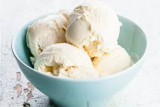
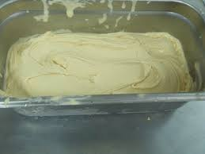

Helado de Vainilla
Ingredientes
- 250 c.c. de leche
- 150 grs. de azúcar
- 1 vaina de vainilla
- 1/4 vaina de canela
- 1/6 de cáscara de naranja
- 400 grs. de nata
- 5 yemas
- 4 claras
Elaboración
Paso 1: Calentar la leche al baño maría con la vainilla, la canela, la cáscara de naranja, y las yemas (bien batidas con parte del azúcar), removiendo constantemente.

Paso 2: Verter la mezcla en un recipiente frío colándolo, mezclar con la nata (batida con parte del azúcar), taparlo y llevar al frigorífico durante 2 horas.
Paso 3: Añadir las claras batidas con parte del azúcar, batir a mano.

Paso 4: Introducirlo en el frigorífico, dejar enfriar 20 minutos. Batirlo y dejarlo congelar.
Sugerencias: No pocas veces imaginamos lo bien que quedaría un helado sembrado con caramelo líquido o chocolate. Esta receta de vainilla les dará ese toque de sabor especial.